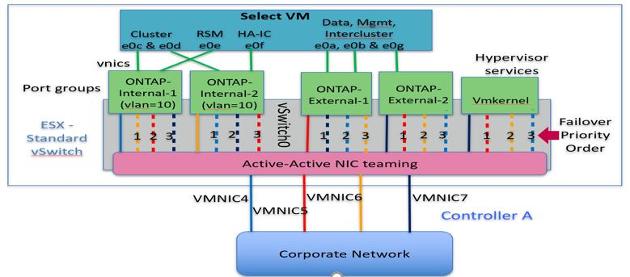
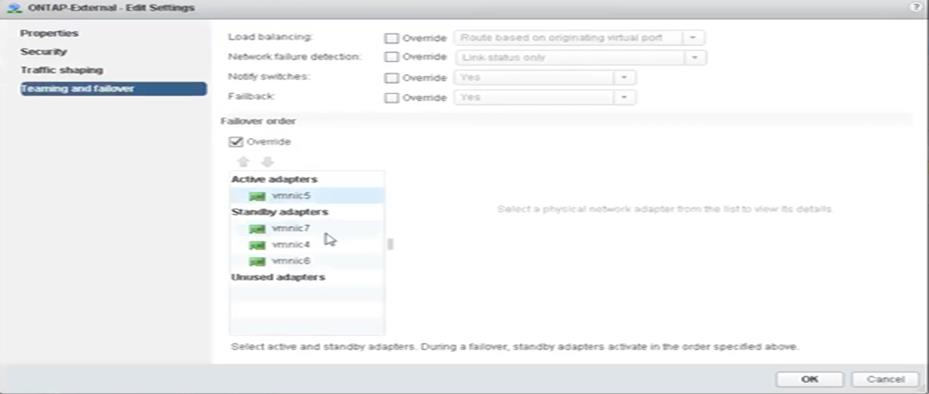
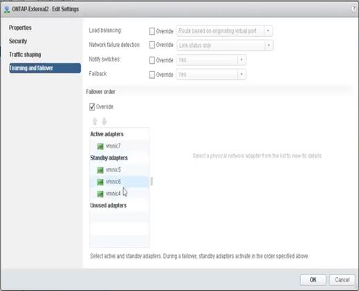
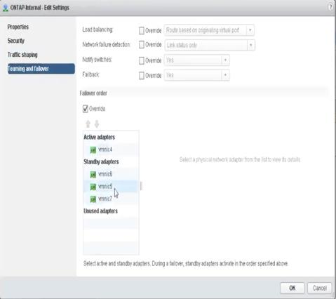
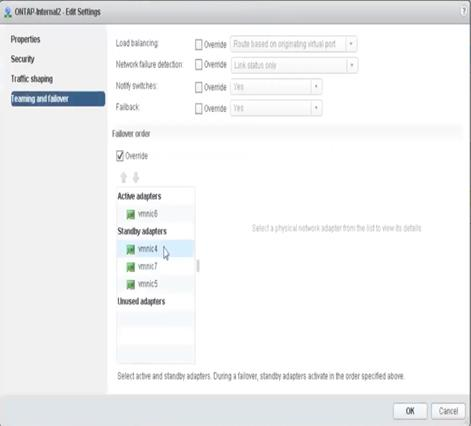
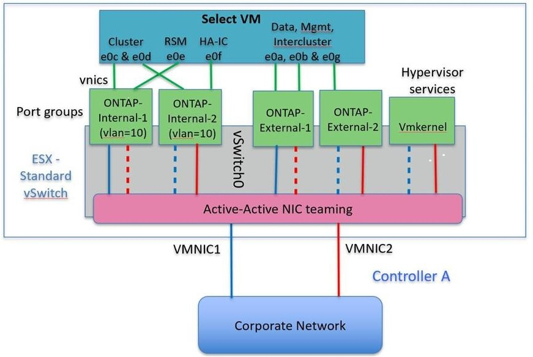
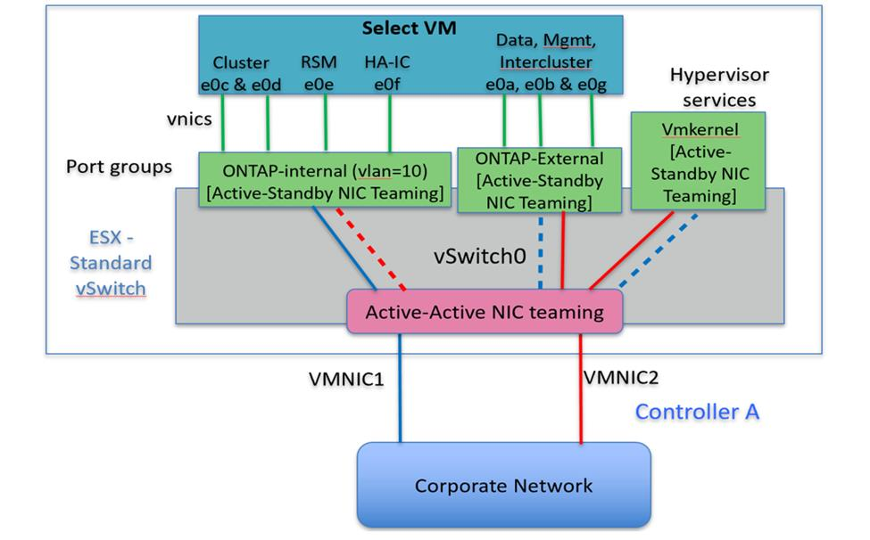
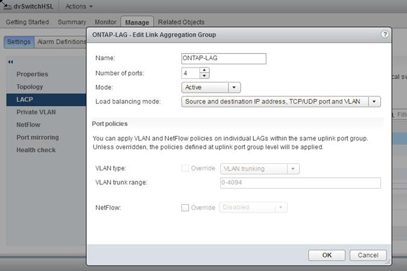
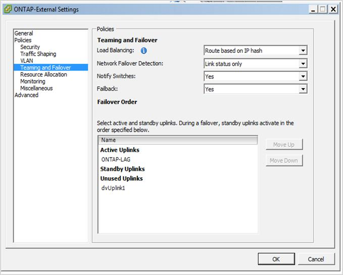
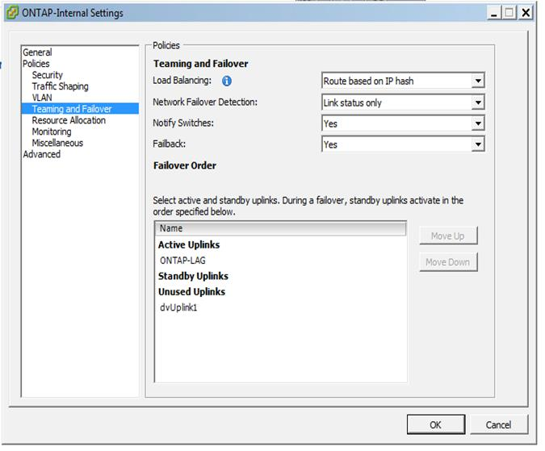

VMware vSphere vSwitch 配置
提供者
双 NIC 和四 NIC 配置的 ONTAP Select vSwitch 配置和负载平衡策略。
ONTAP Select 支持使用标准 vSwitch 配置和分布式 vSwitch 配置。分布式 vSwitch 支持链路聚合构造（ LACP ）。链路聚合是一种常见的网络构造，用于在多个物理适配器之间聚合带宽。LACP 是一种与供应商无关的标准，可为网络端点提供开放式协议，将物理网络端口组捆绑到一个逻辑通道中。ONTAP Select 可以与配置为链路聚合组（ LAG ）的端口组配合使用。但是， NetApp 建议使用各个物理端口作为简单上行链路（中继）端口，以避免使用 LAG 配置。在这些情况下，标准和分布式 vSwitch 的最佳实践是相同的。
本节介绍双 NIC 和四 NIC 配置中应使用的 vSwitch 配置和负载平衡策略。
在配置 ONTAP Select 要使用的端口组时，应遵循以下最佳实践；端口组级别的负载平衡策略是基于源虚拟端口 ID 的路由。VMware 建议在连接到 ESXi 主机的交换机端口上将 STP 设置为 PortFast 。
所有 vSwitch 配置都要求至少将两个物理网络适配器捆绑到一个 NIC 组中。ONTAP Select 支持双节点集群使用一个 10 Gb 链路。但是， NetApp 的最佳实践是通过 NIC 聚合确保硬件冗余。
在 vSphere 服务器上， NIC 组是一种聚合构造，用于将多个物理网络适配器捆绑到一个逻辑通道中，从而可以在所有成员端口之间共享网络负载。请务必记住，在没有物理交换机支持的情况下，可以创建 NIC 组。负载平衡和故障转移策略可以直接应用于 NIC 组，而 NIC 组不知道上游交换机配置。在这种情况下，策略仅应用于出站流量。

|
ONTAP Select 不支持静态端口通道。分布式 vSwitch 支持启用了 LACP 的通道，但使用 LACP LAG 可能会导致 LAG 成员之间的负载分布不均匀。 |
对于单节点集群， ONTAP Deploy 会将 ONTAP Select VM 配置为对外部网络使用端口组，并对集群和节点管理流量使用相同的端口组或（可选）不同的端口组。对于单节点集群，可以将所需数量的物理端口作为活动适配器添加到外部端口组中。
对于多节点集群， ONTAP Deploy 会将每个 ONTAP Select VM 配置为对内部网络使用一个或两个端口组，而对外部网络单独使用一个或两个端口组。集群和节点管理流量可以使用与外部流量相同的端口组，也可以使用单独的端口组。集群和节点管理流量不能与内部流量共享同一端口组。
标准或分布式 vSwitch 以及每个节点四个物理端口
可以为多节点集群中的每个节点分配四个端口组。每个端口组都有一个活动物理端口和三个备用物理端口，如下图所示。
每个节点具有四个物理端口的 * vSwitch *

端口在备用列表中的顺序非常重要。下表提供了四个端口组之间的物理端口分布示例。
-
网络最低配置和建议配置 *
| 端口组 | 外部 1. | 外部 2. | 内部 1. | 内部 2. |
|---|---|---|---|---|
活动 |
vmnic0 |
vmnic1. |
vmnic2. |
vmnic3. |
备用 1 |
vmnic1. |
vmnic0 |
vmnic3. |
vmnic2. |
备用 2. |
vmnic2. |
vmnic3. |
vmnic0 |
vmnic1. |
备用 3. |
vmnic3. |
vmnic2. |
vmnic1. |
vmnic0 |
下图显示了 vCenter GUI （ ONTAP 外部和 ONTAP 外部端口 2 ）中外部网络端口组的配置。请注意，活动适配器来自不同的网卡。在此设置中， vmnic 4 和 vmnic 5 是同一物理 NIC 上的双端口，而 vmnic 6 和 vminc 7 是同一个 NIC 上的类似双端口（本示例不使用 vnmic 0 到 3 ）。备用适配器的顺序提供了一个分层故障转移，内部网络中的端口也是最后一个。备用列表中的内部端口顺序在两个外部端口组之间进行类似的交换。
-
第 1 部分： ONTAP Select 外部端口组配置 *

-
第 2 部分： ONTAP Select 外部端口组配置 *

为便于阅读，分配如下：
| ONTAP 外部 | ontap-External2. |
|---|---|
活动适配器： vmnic5 备用适配器： vmnic7 ， vmnic4 ， vmnic6 |
活动适配器： vmnic7 备用适配器： vmnic5 ， vmnic6 ， vmnic4 |
下图显示了内部网络端口组（ ONTAP 内部和 ONTAP 内部 2 ）的配置。请注意，活动适配器来自不同的网卡。在此设置中， vmnic 4 和 vmnic 5 是同一物理 ASIC 上的双端口，而 vmnic 6 和 vmnic 7 则是同一个 ASIC 上的类似双端口。备用适配器的顺序提供了一个分层故障转移，外部网络中的端口也是最后一个。备用列表中外部端口的顺序在两个内部端口组之间进行类似的交换。
-
第 1 部分： ONTAP Select 内部端口组配置 *

-
第 2 部分： ONTAP Select 内部端口组 *

为便于阅读，分配如下：
| ONTAP 内部 | ONTAP 内部 2. |
|---|---|
活动适配器： vmnic4 备用适配器： vmnic6 ， vmnic5 ， vmnic7 |
活动适配器： vmnic6 备用适配器： vmnic4 ， vmnic7 ， vmnic5 |
标准或分布式 vSwitch 以及每个节点两个物理端口
使用两个高速（ 25/40 Gb ） NIC 时，建议的端口组配置在概念上与使用四个 10 Gb 适配器的配置非常相似。即使仅使用两个物理适配器，也应使用四个端口组。端口组分配如下：
| 端口组 | 外部 1 （ e0a ， e0b ） | 内部 1 （ e0c ， e0e ） | 内部 2 （ e0d ， e0f ） | 外部 2 （ e0g ） |
|---|---|---|---|---|
活动 |
vmnic0 |
vmnic0 |
vmnic1. |
vmnic1. |
备用 |
vmnic1. |
vmnic1. |
vmnic0 |
vmnic0 |
-
每个节点具有两个高速（ 25/40 Gb ）物理端口的 vSwitch *

使用两个物理端口（ 10 Gb 或更少）时，每个端口组应配置一个活动适配器和一个备用适配器，使其彼此相对。内部网络仅适用于多节点 ONTAP Select 集群。对于单节点集群，可以将这两个适配器配置为外部端口组中的活动适配器。
以下示例显示了 vSwitch 的配置以及负责处理多节点 ONTAP Select 集群的内部和外部通信服务的两个端口组。如果网络发生中断，外部网络可以使用内部网络 vmnic ，因为内部网络 vmnic 属于此端口组并配置为备用模式。外部网络的情况正好相反。在两个端口组之间交替使用活动和备用 vmnic 对于在网络中断期间正确地对 ONTAP Select VM 进行故障转移至关重要。
每个节点具有两个物理端口（ 10 Gb 或更少）的 * vSwitch *

采用 LACP 的分布式 vSwitch
在配置中使用分布式 vSwitch 时，可以使用 LACP （尽管这不是最佳实践）来简化网络配置。唯一受支持的 LACP 配置要求所有 vmnic 都位于一个 LAG 中。上行链路物理交换机在通道中的所有端口上必须支持介于 7 ， 500 到 9 ， 000 之间的 MTU 大小。内部和外部 ONTAP Select 网络应在端口组级别隔离。内部网络应使用不可路由（隔离）的 VLAN 。外部网络可以使用 VST ， EST 或 VGT 。
以下示例显示了使用 LACP 的分布式 vSwitch 配置。
使用 LACP* 时的 * LAG 属性

-
使用已启用 LACP 的分布式 vSwitch 的外部端口组配置 *

-
使用启用了 LACP 的分布式 vSwitch 的内部端口组配置 *

|
|
LACP 要求您将上游交换机端口配置为端口通道。在分布式 vSwitch 上启用此功能之前，请确保已正确配置启用了 LACP 的端口通道。 |
 请求文档变更
请求文档变更 在 GitHub 上编辑
在 GitHub 上编辑 提供者指南
提供者指南